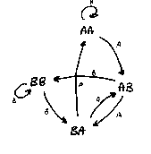
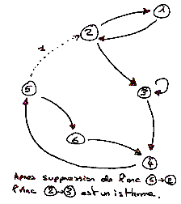
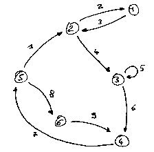
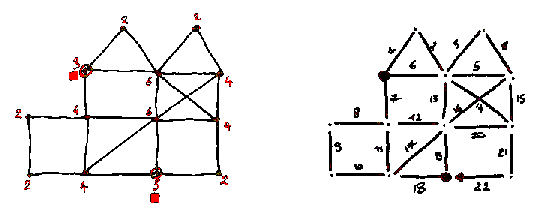
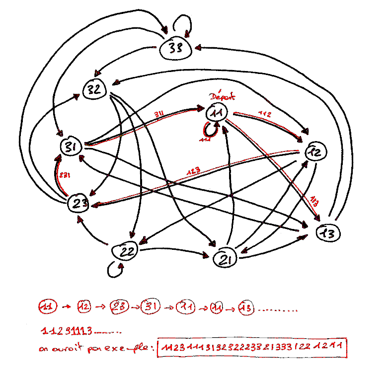

J'espère que la lecture de ce petit papier vous donnera autant
de plaisir que j'en ai eu à l'écrire.
Un peu de théorie des graphes.
J'avais trouve ce problème très intéressant, comme le sont toujours les articles de Ian Stewart, de Jean Paul Delahaye, et des autres intervenants réguliers de cette revue, que ce soit à la rubrique jeux mathématiques ou ailleurs.
Le nom de l'article était resté gravé dans ma mémoire:
"Ouroboros, Ourotore, codage et problèmes annexes non résolus."
La méthode de résolution est très largement inspirée de cet article, et en gros, je n'invente rien. J'ai juste programmé une méthode de résolution et passé un peu de temps à réfléchir à ce problème.
Par la suite, je ne considérerai pas que les séquences sont "circulaires", c'est à dire que le message est périodique. Il est très facile de passer d'une représentation à l'autre, cela ne retire donc rien au problème général. Les chaînes construites par la suite n'ont donc qu'un lointain rapport avec Ouroboro, le serpent qui se mord la queue.
Vous pouvez essayer les codes : AA , AB, BA puis BB.
Mais dans le cas où le code est lu "au vol", la séquence
ABBAA couvre tous ces cas.
Les codes successivement "vus" par la serrure sont : AB, BB, BA et AA .
Cet exemple est très simple, et se construit de façon
très intuitive.
Maintenant, on va tenter de résoudre ce problème de la construction de la séquence des "lettres" qui décrit tous les codes d'une certaine longueur, disons C, avec des lettres prises dans un alphabet de A lettres.
L'exemple ci dessus : ABBAA est une séquence solution au probléme des codes de longueur 2 dans un alphabet de 2 lettres : {A,B}.
On reviendra sur l'utilité de ces séquences plus loin,
ou du moins de leur utilité supposée.
L'exemple précédent était très simple,
en voici un, un peu plus complexe et plus joli...
Dans cette chaîne de caractères, on peut trouver l'écriture de tous les nombres de 3 chiffres. De 000 à 999.
000100200300400500600700800901110120130140150160170180190210222023024025026027028029031032033303403503603703803904104204304440450460470480490510520530540555056057058059061062063064065066606706806907107207307407507607770780790810820830840850860870888089091092093094095096097098099911211311411511611711811912212312412512612712812913213313413513613713813914214314414514614714814915215315415515615715815916216316416516616716816917217317417517617717817918218318418518618718818919219319419519619719819922322422522622722822923323423523623723823924324424524624724824925325425525625725825926326426526626726826927327427527627727827928328428528628728828929329429529629729829933433533633733833934434534634734834935435535635735835936436536636736836937437537637737837938438538638738838939439539639739839944544644744844945545645745845946546646746846947547647747847948548648748848949549649749849955655755855956656756856957657757857958658758858959659759859966766866967767867968768868969769869977877978878979879988989900
Vous pouvez essayer, avec votre traitement de texte ou votre viewer.
Cherchez par exemple 456, ou 999.... Ils y sont tous.
En plus, cette séquence fait 1002 caractères de long,
et on va prouver par la suite qu'il n'en existe pas de plus courte. Elle
n'est pas unique pour autant.
Vous pouvez même vérifier que chaque mot (nombre) de deux lettres (chiffres) est exactement présent 10 fois, exception faite du tout premier mot. Ici 00. Vous voyez pourquoi ?.
Cette famille de suites est très riche est constitue une bonne
source de réflexion si on s'intéresse aux problèmes
de codage de l'information, de redondance....
En voici un, un peu plus simple sur lequel on pourra raisonner.
La longueur du code (qu'on notera L), cette fois ci est de 3 lettres, et l'alphabet (le nombre de touches) est de deux lettres {AB}.
Il faut pour couvrir tous les cas, former tous les mots suivants:
AAA
AAB
ABA
ABB
BAA
BAB
BBA
BBB
soit 8 mots. (si on remplace A par 0 et B par 1, on a tous les nombres de 0 à 7 exprimés en notation binaire).
Un majorant de la longueur minimum de la séquence est 24=8*3, et correspond à la chaîne triviale:
AAA AAB ABA ABB BAA BAB BBA BBB
On peut retravailler cette séquence en supprimant les répétitions. Ainsi AAA AAB donne lorsque l'on parcourt cette séquence : AAA , AAA , AAA, AAB. Explication :
AAA AAB
AAA AAB
AAA AAB
AAA AAB
On peut donc économiser ici 2 lettres en formant AAAB.
De cette façon la séquence initiale:
AAA AAB ABA ABB BAA BAB BBA BBB
peut être explorée lettre par lettre, et si la nouvelle lettre ne code pas un nouveau mot, on la supprime. On notera une étoile sur les codes rencontrés pour la première fois.
AAA *
AAA
AAA
AAB *
ABA *
BAB *
ABA
BAA *
AAB
ABB *
BBB *
BBA *
BAA
AAB
ABA
BAB
ABB
BBB
BBA
BAB
ABB
BBB
On obtient donc le message : AAABABABAABBBA, beaucoup moins redondant.
Est ce le plus court message ?. Si tous les mots de 3 lettres
s'y trouvent, et sans aucun doublet, alors ce sera bien le plus court
message.
La question suivante qui vient immédiatement à l'esprit
est : "Est il possible de construire cette plus courte séquence,
et si oui, dans tous les cas ?"
dans notre exemple : AAABABABAABBBA
Une lecture attentive montre qu'au moins la séquence ABA est présente plusieurs fois :
AAABABABAABBBA
AAABABABAABBBA
AAABABABAABBBA
On peut donc peut être mieux faire.
On sait que si la taille du code est C, que le nombre de lettres dans
l'alphabet est A, on peut former A**C (lisez A puissance C) mots.
Sur notre exemple : 2**3 = 8 mots de 3 lettres avec A et B.
On sait que la longueur du message comprenant tous les mots est inférieure à la concaténation de tous ces mots.
Dans le meilleur des cas, chaque nouveau caractère lu, formerait avec les précédents un nouveau mot. C'est ce qui se passe par exemple avec le message: AAABBBABAA
Vérifions. En le lisant, on obtient les mots :
AAA , AAB, ABB, BBB, BBA, BAB, ABA, BAA. 8 mots différents.
On ne peut pas faire plus court.
Avec un alphabet de A lettres, un code de longueur C :
Le nombre de lettres minimum pour former les A**C mots est donc C+(A**C - 1)
C: Taille du code pour le premier mot,
1 caractère pour chaque nouveau mot, soit pour les A**C
mots moins le premier.
Le petit tableau suivant vous indique la taille qu'aurait la séquence "minimale" en fonction des paramètres que sont la taille du code et le nombre de lettres de l'alphabet.
(Si vous etes vraiment pressés, vous pouvez, en cliquant dès
maintenant sur les "liens" en bleu, accéder directement aux séquences
"minimales" qui se trouvent en bas de ce document... )
|
|
|
|
||||||||
|
2
|
3
|
4
|
5
|
6
|
7
|
8
|
9
|
10
|
||
| 2 |
5
|
10
|
17
|
26
|
37
|
50
|
65
|
82
|
101
|
|
| 3 |
10
|
|||||||||
|
|
4 |
19
|
2404
|
4099
|
||||||
|
|
5 |
36
|
3129
|
7780
|
16811
|
32772
|
59053
|
100004
|
||
|
|
6 |
69
|
4101
|
15630
|
46661
|
117654
|
262149
|
531446
|
1000005
|
|
| 7 |
134
|
2193
|
16390
|
78131
|
279942
|
823549
|
2097158
|
4782975
|
10000006
|
|
| 8 |
263
|
6568
|
65543
|
390632
|
1679623
|
5764808
|
16777223
|
43046728
|
100000007
|
|
| 9 |
520
|
19691
|
262152
|
1953133
|
10077704
|
40353615
|
134217736
|
387420497
|
1000000008
|
|
| 10 |
1033
|
59058
|
1048585
|
9765634
|
60466185
|
282475258
|
1073741833
|
3486784410
|
10000000009
|
|
Toute méthode de construction, ou tout algorithme conduisant à une séquence de C+(A**C - 1) lettres qui comprend tous les codes sera donc optimale (du point de vue de la longueur du message).
Voici présentée une méthode permettant de venir
à bout de ce problème.
X(0) X(1) ...... X(I-C) ...... X(I-1) X(I) X(I+1) ........ X(N)
Supposons que l'on positionne un index en I. Le dernier mot lu est donc :
X(I-C) ...... X(I-1) X(I)
Le prochain sera : X(I-C+1) ...... X(I-1) X(I) X(I+1).
Un terme disparaît à gauche, et un autre apparaît à droite.
On constate que le nombre de choix pour chaque mouvement du curseur est de A : la taille de l'alphabet Dans l'exemple précèdent, chaque nouvelle lettre était soit A, soit B.
On pourrait donc représenter chaque nouveau caractère
comme une branche d'un arbre. Chaque noeud de cet arbre est une "racine"
de C-1 lettres (C étant toujours le nombre de lettres dans le code).
A chaque racine, on associe une lettre (une branche) qui
forme un mot. On prend la nouvelle racine constituée des dernières
lettres et on choisit une nouvelle branche.....
Comme on le voit, une représentation possible de ce problème
est de considérer toutes les racines (mots de C-1 lettres), et de
construire un graphe reliant ces racines deux à deux.
Pour notre exemple : C=3 et un Alphabet de 2 lettres, on a les racines suivantes : AA,AB,BA,BB.
soit graphiquement :

La branche {A} qui relie les racines AA et AB correspond au mot AAB.
Celle qui relie AA à AA correspond au mot AAA.
Le parcourt des noeuds AA puis AA, puis AB correspond à la séquence
AAA,AAB.
que l'on peut représenter comme : {AA} A B .
{AA} étant l'origine. Cette séquence AAAB couvre bien
les mots AAA et AAB.
On se rend compte assez facilement qu'une telle construction énumère bien tous les mots possibles. Chaque mot est une branche, ici, elles sont au nombre de 8.
Si il existe un chemin passant par toutes les branches, une et une
seule fois, alors la séquence formée de tous ces mots (avec
l'élimination des parties communes entre 2 mots consécutifs)
sera bien une séquence de longueur optimale.
Notre problème est donc ramené à un problème de théorie des graphes. Ce problème est celui de la recherche d'un chemin passant une fois et une seule par chaque arc, et se nomme le problème de la recherche d'un chemin Eulerien.
Euler a résolu ce problème, nomme aussi problème des 7 ponts de Koenigsberg.
L'idée est de compter à chaque noeud du graphe le nombre
de branches qui y arrivent et qui en partent. Si autant d'arcs arrivent
que d'arcs partent, il est possible de ne faire que passer par ce sommet.
Si tous les sommets connexes (reliés par un chemin) d'un graphe
possèdent cette propriété (autant d'arcs entrants
que sortants) , il existe nécessairement un chemin qui passe par
chaque arc. La démonstration n'est pas très complexe, mais
je préfère ici donner un algorithme constructif.
Les ouvrages de théorie des graphes sont souvent d'une lecture
"ardue", car souvent, chaque nouveau concept nécessite une quantité
impressionnante de termes, chacun ayant une signification très précise.
Je vais ici définir quelques termes utiles pour une bonne compréhension
de l'algorithme.
Connexité. Deux sommets A et B sont connexes s'il existe un chemin qui relie A à B. On dira de deux sommets qu'ils sont fortement connexes s'il existe un chemin reliant A à B et un chemin reliant B à A.
Composantes connexe. Tous les sommets d'un graphe pouvant
être reliés les uns aux autres font partie d'une même
composante connexe.

Isthme. On dira d'un arc reliant les sommets A et B qu'il
est un isthme d'un graphe, si sa suppression augmente le nombre de composantes
connexes.
Sur le schéma précédent, l'arc 2->3 est un isthme
si après suppression de l'arc 1->2.
Si on voulait tracer un chemin Eulerien sur ce graphe, il faudrait
prendre garde de ne pas "isoler" le sommet 1 en empruntant l'isthme 2->3
après avoir supprimé l'arc 5->2.
Voici un exemple de chemin Eulerien, sur ce graphe. L'ordre de parcourt
est noté sur chaque arc.

Assez parlé.

.
Sur le dessin de gauche, j'ai noté en rouge le nombre d'arcs
connecté à chaque sommet.
Tout tracé réalisé sans lever le crayon de ce
dessin devra partir d'un sommet impair vers un sommet impair. Sur le dessin
de droite, j'ai donné un exemple où les arcs sont numérotés
de 1 à 22.
Exercez vous, c'est facile, il faut toujours garder en bonne vue le
sommet de fin, et prendre garde de ne pas "couper" le graphe en deux.
Maintenant, plus en rapport avec notre propos, le cas : Alphabet={1,2,3}
et longueur de code 3. Les racines (sommets) seront ici des mots de 2 lettres.
Avec un alphabet de 3 lettres, cela représente 8 mots.

Sur ce schéma, j'ai indiqué le début d'une chaîne
Eulerienne. Ce n'est vraiment pas très difficile de ne pas passer
par un isthme et donc de bien parcourir toutes les arêtes. Je vous
conseille de tracer les arêtes dans une couleur, et de les repasser
a l'aide d'une autre couleur, en notant á chaque fois la lettre
qui est générée.
Éventuellement, il est possible de noter au dessus de chaque
arc sa signification. Par exemple l'arc 11-12 correspond au mot 112.
Comme exemples d'applications, autre que l'acces à votre
hall d'immeuble lorsque vous avez oublié le code d'acces, on peut
citer, ou on peut penser à:
Vous emettez un signal Radar, vers un objet dont vous avez déja
une estimation de distance, et vous voulez calculer précisement
la distance de cet objet.
Le problème est que l'objet est très distant, et que
le signal en retour (l'écho) est trés faible.
L'idée est de mesurer le temps que met le signal à parcourir l'aller et le retour.
Emission : 00000000000000000001000000000000000000000000000
.....
Reception: 00000000000000000000000000000000001000000000000
.....
En mesurant le temps écoulé entre l'émission du 1 et sa reception, on peut calculer le temps de trajet.
Maintenant, imaginons que le signal en reception est entaché
de bruit. Il se peut que les choses ne soient pas si nettes que sur l'exemple
précédent. On va donc essayer de "décaler" et de superposer
les signaux de retour avec le signal d'emission pour detecter la valeur
de retard la plus probable. Cette opération porte le nom de corrélation
en traitement du signal. Par exemple :
Emission : 000001110000000000000000000011100000000000000000000111000
.....
Reception: 000000001000000001010000000000001000000011100000000100000
.....
On va retarder le signal de reception de 1 unite de temps, puis compter le nombre de fois ou ce signal prend les memes valeurs que le signal d'emission. On va ensuite repeter cette opération avec 2 retards, avec 3 ....
On pourrait compter le nombre de similitudes entre les signaux (emission et reception décalée) pour detecter le retard le plus probable. Je n'indique ici que la séquence la plus probable en gras.
Emission
: 000001110000000000000000000011100000000000000000000111000 .....
Reception, retard 0: 000000001000000001010000000000001000000011100000000100000
.....
Reception, retard 1: 000000001000000001010000000000001000000011100000000100000
.....
Reception, retard 2: 000000001000000001010000000000001000000011100000000100000
.....
Reception, retard 3: 000000001000000001010000000000001000000011100000000100000
.....
Reception, retard 4: 000000001000000001010000000000001000000011100000000100000
.....
Reception, retard 5: 000000001000000001010000000000001000000011100000000100000
.....
Reception, retard 6:
000000001000000001010000000000001000000011100000000100000 .....
Reception, retard 7:
000000001000000001010000000000001000000011100000000100000 .....
Reception, retard 8:
000000001000000001010000000000001000000011100000000100000 .....
Reception, retard 9:
000000001000000001010000000000001000000011100000000100000 .....
Reception, retard 10:
000000001000000001010000000000001000000011100000000100000 .....
Reception, retard 11:
000000001000000001010000000000001000000011100000000100000 .....
Reception, retard 12:
000000001000000001010000000000001000000011100000000100000 .....
Reception, retard 13:
000000001000000001010000000000001000000011100000000100000 .....
Reception, retard 14:
000000001000000001010000000000001000000011100000000100000 .....
Le retard probable est ici de 11 pas de temps.
On pourrait imaginer que le signal en reception est beaucoup plus perturbé que dans notre exemple. Le rapport Signal/Bruit peut etre beaucoup plus faible. Dans ce cas, il est interessant de construire des séquences d'emission qui sont elles memes tres peu corrélées. Donc des séquences où la répétition d'un meme motif n'apparait que très rarement. Cela nous ramène à nos séquences...
Ainsi, la superposition des séquences d'emission et de reception
après décalage ne fera apparaitre de similitudes que pour
une valeur de décalage.
Exemple: Je prends ici des codes qui ne sont plus "binaires", mais le principe reste le meme. J'utilise un code sur 4 lettres avec un alphabet de 3 lettres.
Emission : 000010002001100120021002201010201111011201210122020211021202210222211121122121222000
Reception : xxxxxxxxxxxxxxxxxxxxxxxxxxxxxxxxxxxxxxxxxxxxxxxxxx1012xx202xxxxxxxxxxxxxxxxxxxxxxxx
meme si une seule petite portiuon du signal émis est recu correctement, il est possible de savoir le retard, car cette portion de signal est present une et une seule fois dans la séquence émise.
Plus le signal sera clair, plus le nombre de "motifs" à localiser dans la séquence initiale sera grand, et plus la probabilité de correspondance entre les signaux sera grande.
Le cas précédent fonctionne avec un code de 4 lettres. Tout signal de 4 lettres consécutives permet donc de determiner un emplacement unique dans la séquence de départ. Imaginons que 30 quadruplets vous indiquent que le retard est de 10 pas de temps, et que 3 autres vous donnent un retard de 11, de 18 et de 7 pas de temps, il y a de fortes chances que 30 soit la bonne valeur du retard.
Comme il est possible de calculer des séquences aussi longues que l'on veut, avec des tailles de codes aussi grandes que l'on veut, il est possible de faire de très longues séquences peu corrélées.
Dans le Pour la Science mentionné ci dessus, Ian Stewart parlait
d'une application pour la cartographie radar de Venus, je pense que dans
ce cas, meme avec l'antenne d'Arecibo, le signal de reception devait
etre bien faible....
Par exemple :
Regle 0 : 0000000011111111
Règle 1 : 0000111100001111
Regle 2 : 0011001100110011
Règle 3 : 0101010101010101
Ainsi, si le capteur lit ici 0110, on sait que l'on est en 6em position.
Maintenant, réaliser 4 règles graduées, c'est difficile.
On pourrait souhaiter placer les 4 yeux sur la meme règle. Les yeux
liraient cette fois ci 4 valeurs consécutives.
Le problème est que ces 4 valeurs consécutives doivent
indiquer sans ambiguité une seule position. Cela ressemble fort
à notre problème.
Un autre problème se pose, la règle (unique) ainsi gravée doit avoir une précision 4 fois supérieure à nos 4 règles de base. Et on ne sait faire que 2 fois plus précis. Qu'à cela ne tienne. On va positionner 2 règles et utiliser un code sur 2 lettres.
Explications : Il faut coder 16 positions avec un alphabet de 4 lettres.
Par exemple : 00112210203233130 soit 17 lettres.
0 signifiera ici 0 sur la règle 0 et 0 sur la règle
1 .... 3 sera 1 sur la règle 0 et 1 sur la règle
1.
On a donc les 2 règles suivantes, chacune avec ses 2 yeux.
Code : 00112210203233130
Règle 0 : 00001100101111010
Règle 1 : 00110010001011111
La lecture du code 00 sur la regle 0 et de 10 sur la règle 1
revient à la lecture du code 10 dans la séquence. Ce code
ne parait qu'une seule fois dans la séquence, sa position est donc
unique, et fixée une fois pour toute.
Informatiquement parlant, il faudrait stocker la position de chaque
code.
Le traitement est un peu plus complexe qu'avec 4 règles, mais l'économie matérielle est importante.
(Si quelqu'un arrive ici et a déjà vu ce procédé
utilisé quelque part, j'aimerais bien le savoir. )
(email : laurent.buchard@wanadoo.fr )
Enfin, je pense que ces séquences peuvent avoir des applications diverses et variées en codage, en stockage, ne serait ce que pour générer des "motifs" pour des tests.
Ecrivez moi si des idées vous viennent....
laurent.buchard@wanadoo.fr
et n'hesitez
pas à visiter ma page consacrèe au billard francais :
http://perso.wanadoo.fr/laurent.buchard/index.html
Laurent Buchard. (Fevrier 2000).